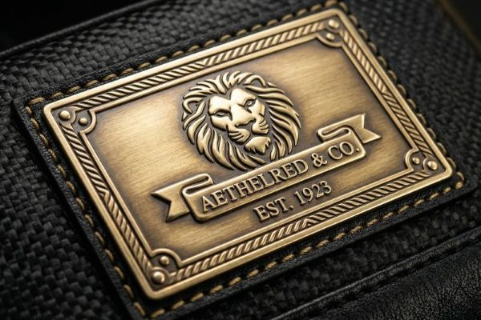
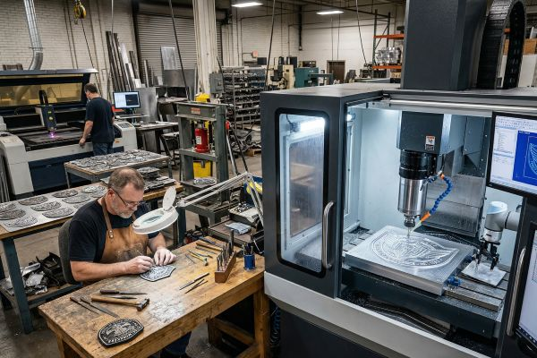

Metal Patches: Premium Branding Solutions
Discover everything about metal patches: materials, manufacturing processes, design tips, and why they're the perfect choice for luxury branding, premium corporate identity, and applications where only the highest quality will suffice.
What Are Metal Patches?
Metal patches represent the pinnacle of premium patch craftsmanship, offering unmatched durability, sophistication, and perceived value. Unlike fabric-based patches, metal patches (also called metal emblems or metal badges) are constructed entirely from metal alloys, creating a substantial, three-dimensional presence that immediately communicates quality and luxury. Metalworking techniques have been refined over thousands of years, and these patches are not merely decorations - they're statements of excellence, permanence, and attention to detail that elevate any brand or product they adorn.
While fabric patches serve many applications well, metal patches occupy a unique niche where only the highest quality will suffice. The weight, the cool touch, the metallic sheen, and the substantial feel of metal patches create an emotional response that fabric patches simply cannot match. Luxury brands, premium automotive companies, high-end fashion houses, and exclusive organizations all recognize metal patches as the ultimate way to display their identity with distinction and pride.

The Rich History of Metal Emblems
The story of metal emblems is deeply intertwined with the history of human civilization itself. From the earliest metalworking civilizations of ancient Mesopotamia and Egypt to the sophisticated guilds of medieval Europe, metal has always been the material of choice for symbols of authority, achievement, and identity. Ancient warriors wore metal insignia into battle, medieval craftsmen marked their finest work with metal maker's marks, and royalty displayed their coats of arms in elaborate metalwork.
The Industrial Revolution of the 19th century brought mass production techniques to metalworking, making metal emblems more accessible while maintaining their prestige. The automotive industry became a major adopter, with car manufacturers creating iconic metal hood ornaments and badges that remain synonymous with luxury and brand identity to this day. Military organizations around the world have long used metal medals and insignia to honor achievement and distinguish rank. The 20th century saw metal emblems expand into fashion, consumer products, and corporate branding, solidifying their position as the ultimate symbol of quality and permanence.
Metal Patches in Modern Branding
Today, metal patches continue to evolve while maintaining their timeless appeal. Modern manufacturing techniques like die casting, photo etching, and laser engraving allow for unprecedented precision and detail. Luxury fashion houses use metal patches on leather goods and apparel, premium luggage brands mark their products with metal emblems, and craft breweries and artisanal producers use metal patches to communicate quality and authenticity. Even in our digital age, the tactile, physical presence of a well-crafted metal patch creates a connection that pixels simply cannot replicate.
Materials Used in Metal Patches
The choice of material dramatically affects the appearance, durability, and cost of metal patches. Each material offers unique characteristics that make it suitable for specific applications:
Brass
Brass is the most popular and versatile material for metal patches, offering an ideal balance of workability, durability, and aesthetic appeal. Brass patches can be polished to a brilliant golden shine, antique finished for a vintage look, or plated with other metals for different effects. Brass has excellent corrosion resistance when properly finished, and it develops a beautiful patina over time that many find desirable. This material is perfect for corporate branding, luxury products, and applications where a classic, timeless appearance is desired.
Zinc Alloy
Zinc alloy (often called Zamak) is an excellent choice for creating intricate three-dimensional designs through die casting. This material allows for exceptional detail and complex shapes that would be difficult or impossible with other metals. Zinc alloy patches can be plated with brass, nickel, gold, or copper to achieve various finishes. While slightly softer than brass, zinc alloy offers excellent value and is particularly popular for fashion applications, promotional items, and designs requiring deep relief or complex shapes.
Stainless Steel
Stainless steel represents the ultimate in durability and corrosion resistance. This material maintains its appearance through years of harsh conditions, making it perfect for outdoor equipment, marine applications, industrial products, and any situation where maximum longevity is required. Stainless steel patches have a sleek, modern appearance that works exceptionally well with contemporary designs and tech-oriented brands. While more expensive and less malleable than brass or zinc alloy, stainless steel's unmatched durability makes it the material of choice for demanding applications.
Copper and Bronze
Copper and bronze offer warm, distinctive appearances that are perfect for vintage-inspired designs and applications seeking an artisanal, handcrafted look. Copper develops a beautiful reddish-brown patina over time, while bronze offers deeper, richer tones that age gracefully. These materials are particularly popular with craft breweries, heritage brands, and products emphasizing traditional craftsmanship and authenticity.
Manufacturing Processes for Metal Patches
Creating quality metal patches requires specialized techniques that transform raw metal into finished emblems. Different processes offer different capabilities and effects:
Die Casting
Die casting is ideal for creating three-dimensional zinc alloy patches with intricate details and deep relief. The process involves creating a steel mold (die) into which molten zinc alloy is injected under high pressure. This method allows for consistent, high-volume production of complex shapes with exceptional detail. Die casting is perfect for designs requiring raised lettering, logos, or sculptural elements. The cast pieces are then polished, plated, and finished to create the final product.
Stamping and Embossing
Stamping (also called pressing) is the traditional method for creating brass and copper patches. This process uses metal dies to cut and shape sheet metal into the desired form. Embossing creates raised elements by pressing the metal from behind, while debossing creates recessed areas. Stamping produces crisp, clean edges and is perfect for flat or moderately three-dimensional designs. This method has been used for centuries and remains the gold standard for classic metal emblems and badges.
Photo Etching
Photo etching (also called chemical etching) uses photoresist and acid to create intricate, precise designs on metal. This process is ideal for extremely detailed artwork, fine lines, and complex patterns that would be difficult to achieve with other methods. Photo etching allows for both raised (etched away surrounding material) and recessed (etched into the material) designs. This technique is particularly popular for military insignia, technical emblems, and applications requiring micro-precision.
Laser Engraving and Cutting
Laser technology offers contemporary options for metal patch creation. Laser engraving can create incredibly precise, permanent marks on metal surfaces, perfect for serial numbers, signatures, or fine details. Laser cutting creates clean, precise edges on flat metal shapes. While not typically used as the primary manufacturing method for most patches, laser technology is often used for finishing touches and customizations that add value and uniqueness to the final product.

Finishes and Plating Options
The finish dramatically affects the final appearance and perceived value of metal patches. Numerous options are available:
Polished Finishes
Polished finishes create brilliant, mirror-like surfaces that reflect light dramatically. This finish is achieved through multiple stages of buffing and polishing, resulting in a surface that shows every detail with crystal clarity. Polished metal patches have a glamorous, high-end appearance that works exceptionally well with luxury brands and premium products. Brass, nickel, and gold are particularly striking when polished to a high shine.
Brushed and Satin Finishes
Brushed and satin finishes create a more understated, contemporary look. These finishes feature fine, consistent lines that give the metal a refined, sophisticated appearance while hiding fingerprints and minor wear. Brushed finishes are popular with modern brands, tech companies, and applications seeking an elegant yet practical aesthetic. This finish works exceptionally well with stainless steel and nickel.
Antique and Vintage Finishes
Antique finishes create the appearance of aged, patinated metal with incredible character and charm. These finishes typically involve darkening the recessed areas while leaving raised elements brighter, creating depth and highlighting details. Antique brass, antique bronze, and antique nickel are particularly popular, offering warm, timeless appearances that work beautifully with heritage brands, craft products, and designs seeking a nostalgic, established feel.
Plating Options
Plating allows base metals like zinc alloy or steel to take on the appearance of more expensive metals:
- Nickel Plating: Bright, silvery appearance with excellent durability
- Gold Plating: Luxurious golden finish available in various karat appearances
- Copper Plating: Warm reddish-brown finish that patinas beautifully
- Black Nickel/Black Oxide: Sleek, modern black finish for contemporary designs
- Chrome Plating: Bright, mirror-like finish with exceptional corrosion resistance
Enamel and Color Options
Color can be added to metal patches through various enameling techniques:
- Hard Enamel: Smooth, glass-like surface with exceptional durability and color consistency
- Soft Enamel: Textured surface with recessed color areas and raised metal borders
- Screen Printing: Full-color printing on flat metal surfaces for complex graphics
- Epoxy Coating: Clear protective coating that adds depth and protects against scratches
Design Tips for Metal Patches
Creating effective metal patch designs requires understanding the material's unique characteristics and manufacturing constraints:
Consider Thickness and Relief
Metal patches have substance that should be considered in design:
- Standard Thickness: 1-2mm is typical, balancing substance and wearability
- Relief Depth: 0.3-0.5mm creates visible dimension without being too sharp
- Edge Radius: Slight radius on edges improves comfort and durability
- Backing Consideration: Account for attachment method in overall thickness
Design Elements That Work Best
Certain design elements are particularly effective with metal:
- Bold Lines: Thicker lines and shapes read better in metal
- Contrast: Use raised/recessed areas or different finishes for visual interest
- Typography: Serif fonts and bold sans-serif work better than delicate scripts
- Negative Space: Empty areas highlight metal's natural beauty
- Symbolic Elements: Logos, crests, and icons translate beautifully to metal
Design Constraints to Consider
Metal has certain limitations that should guide design decisions:
- Minimum Line Width: 0.3mm is typically the minimum for raised elements
- Minimum Text Size: 5-6pt is recommended for legibility
- Detail Spacing: Allow at least 0.3mm between raised elements
- Corner Radius: Inside corners should have radius to prevent stress concentrations
- Undercuts: Avoid undercuts that complicate manufacturing
Popular Applications for Metal Patches
Metal patches excel in numerous applications where quality and permanence are paramount:
Luxury and Premium Brands
Luxury brands were among the first to recognize metal patches' marketing power:
- Fashion Houses: High-end apparel, leather goods, and accessories
- Luggage and Travel Goods: Premium luggage, briefcases, and travel accessories
- Watch and Jewelry Brands: Watch boxes, pouches, and presentation items
- Wine and Spirits: Premium bottle labels and packaging elements
- Beauty and Cosmetics: Luxury perfume bottles and gift sets
Automotive and Transportation
The automotive industry has a long history with metal emblems:
- Automotive Brands: Hood ornaments, grille badges, and anniversary emblems
- Motorcycle Clubs: Club insignia and achievement patches
- Marine Industry: Boat builders, yacht clubs, and nautical organizations
- Aviation: Pilot wings, aircraft markers, and aviation clubs
- Bicycle Brands: Frame badges and component markers
Corporate and Organizational Identity
Metal patches elevate corporate identity to new levels:
- Executive Gifts: Premium items for clients, partners, and employees
- Employee Recognition: Service awards, achievement medals, and milestone markers
- Membership Organizations: Exclusive clubs, associations, and alumni groups
- Professional Associations: Certifications, designations, and credentials
- Board and Director Gifts: Premium items recognizing leadership and service
Craft and Artisanal Products
Metal patches communicate authenticity and craftsmanship:
- Craft Breweries and Distilleries: Bottle labels, tap handles, and merchandise
- Artisanal Food Producers: Premium packaging and brand markers
- Woodworkers and Furniture Makers: Maker's marks and brand identifiers
- Leather Crafters: Maker's marks and product branding
- Potters and Ceramic Artists: Branding and signature elements
Ready to Create Your Custom Metal Patches?
Our team specializes in creating premium metal patches that communicate quality, prestige, and attention to detail. Get your free quote and digital proof today to see how metal patches can elevate your brand.
Get Free QuoteAttachment Methods for Metal Patches
Several attachment options are available depending on the application:
Sew-On
Sewing is the traditional and most secure attachment method. Metal patches typically have holes along the edges or in the corners for stitching. This method creates a permanent attachment that can withstand years of wear and washing. Sewing is ideal for applications where the patch may be removed and reattached, or where maximum durability is required. Leather goods, denim jackets, and uniform applications frequently use this method.
Adhesive
Industrial-grade adhesives create a strong, permanent bond between metal patches and various surfaces. This method is ideal for smooth surfaces like metal, wood, glass, and certain plastics. Adhesive attachment is clean, quick, and doesn't require special tools or skills. Double-sided adhesive films are particularly popular for temporary applications or situations where sewing isn't feasible. We recommend testing compatibility with your specific surface before full production.
Pin Backs
Pin backs allow metal patches to be worn like jewelry, pinned to garments, bags, hats, and accessories. Butterfly clutches, rubber clutches, and safety pin backs are all available options. This attachment method makes the patch versatile and reusable, perfect for promotional items, events, and collections. Pin backs are particularly popular with collectors, event attendees, and organizations wanting interchangeable insignia.
Magnetic Backs
Magnetic backs offer a sophisticated, non-damaging attachment option. Strong neodymium magnets hold metal patches securely in place without piercing fabric. This method is perfect for delicate materials, business attire, and situations where you want to move the patch frequently. Magnetic backs work exceptionally well with blazers, scarves, and fine fabrics that could be damaged by pins or sewing.
Screws and Rivets
For the ultimate in permanence and security, screws or rivets can be used. This method is commonly used for leather goods, furniture, and industrial applications. The patch is secured from both sides, creating an attachment that's virtually impossible to remove without tools. Premium briefcases, saddles, and heavy-duty equipment frequently use this method to ensure the patch stays in place through years of heavy use.
Care and Maintenance of Metal Patches
Proper care ensures your metal patches maintain their beauty for decades:
Cleaning Recommendations
- Use a soft, dry microfiber cloth for regular cleaning
- For stubborn dirt, use a mild soap solution and soft brush
- Avoid harsh chemicals, abrasives, and ultrasonic cleaners
- Pat dry immediately after cleaning to prevent water spots
- Polish occasionally with a metal polish appropriate for the finish
Storage and Protection
- Store in a cool, dry place away from direct sunlight
- Use anti-tarnish paper or cloth for long-term storage
- Avoid contact with other metals that could cause scratching
- Consider individual pouches or boxes for valuable pieces
- Handle by edges to avoid fingerprints on polished surfaces
Long-Term Preservation
- Apply a clear protective coating for outdoor applications
- Re-plate or refinish as needed to restore appearance
- Natural patina on copper and bronze can be preserved or polished
- Document and photograph special pieces for insurance purposes
- Periodically check attachments and re-secure if necessary
Frequently Asked Questions
Are metal patches more expensive than fabric patches?
Yes, metal patches are typically 2-5 times more expensive than fabric patches due to the higher material costs, specialized manufacturing processes, and labor-intensive finishing required. However, metal patches also offer dramatically higher perceived value, exceptional durability, and a premium appearance that fabric patches simply cannot match. For luxury brands, corporate gifts, and applications where quality is paramount, the investment in metal patches often provides excellent return through enhanced brand perception and customer appreciation.
What's the minimum order for metal patches?
At ChinaPatchFactory, we have flexible minimum order requirements for metal patches. While some processes like die casting have minimums due to mold costs, we offer options that allow for smaller quantities. Stamped and photo-etched patches can often be produced in quantities as low as 25-50 pieces. For truly custom, one-of-a-kind metal patches, we have special artisan processes available. Contact us with your specific requirements, and we'll recommend the best manufacturing method and minimum quantity for your project.
How long does it take to produce metal patches?
Standard production time for metal patches is 15-20 business days after proof approval, somewhat longer than fabric patches due to the more complex manufacturing and finishing processes involved. Die casting typically takes longer due to mold creation, while stamping and photo etching can be faster. Rush production options are available for time-sensitive projects, though expedited fees may apply. We recommend budgeting 3-4 weeks from concept to delivery for most metal patch projects to ensure the highest quality results.
Can metal patches be made in custom shapes?
Absolutely! Custom shapes are one of the great strengths of metal patches. Die casting allows for almost unlimited shape possibilities with rounded edges and smooth curves. Stamping and photo etching also allow for custom shapes, though certain limitations apply based on the specific process. We can create metal patches in virtually any shape you can imagine - from simple geometric forms to complex silhouettes of animals, vehicles, buildings, and organic shapes. Our design team can help you create a custom shape that perfectly represents your brand or concept.
How durable are metal patches?
Metal patches are exceptionally durable - in fact, they're the most durable patch option available. A well-made metal patch can easily last 50-100 years or more with proper care. Unlike fabric patches, metal patches won't fade, fray, or deteriorate with age. They're resistant to water, temperature extremes, and most chemicals. Brass and stainless steel offer particularly good corrosion resistance, though all metal patches can benefit from protective finishes for outdoor or marine applications. For applications where permanence is desired, metal patches are simply unmatched.
Conclusion
Metal patches represent the ultimate expression of quality, permanence, and prestige in patch form. From ancient metalworking traditions to modern manufacturing techniques, metal emblems have communicated identity, achievement, and excellence for thousands of years. In our increasingly digital world, the substantial, tactile presence of a well-crafted metal patch creates an emotional connection and lasting impression that transcends trends and time.
Whether you're a luxury fashion house seeking to mark your finest creations, a corporate leader recognizing exceptional achievement, a craft producer communicating authenticity, or an organization creating lasting memorabilia, metal patches offer a solution that elevates your project to new heights. The cool touch, the satisfying weight, the metallic sheen - these sensory experiences combine to create something that people cherish, display, and pass down through generations.
At ChinaPatchFactory, we combine centuries of metalworking tradition with cutting-edge technology to create metal patches of exceptional quality. Our team of artisans and technicians takes pride in every piece we create, ensuring that each metal patch meets the highest standards of craftsmanship and attention to detail. Contact us today to discuss your metal patch project and discover how we can help you create emblems of lasting quality and distinction.